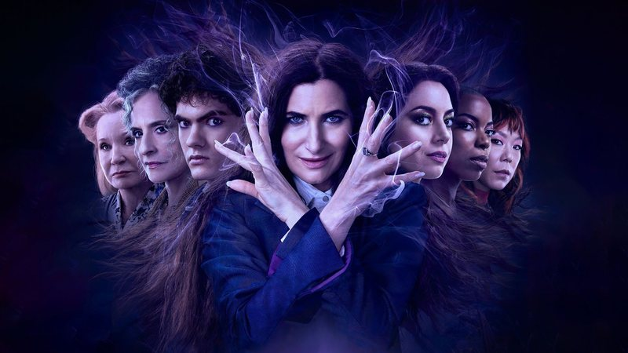

Agatha Desde Sempre segue passos de WandaVision e ousa com qualidade
Agatha Desde Sempre é um conteúdo que, só por existir, já pode ser considerado ousado. Três anos após Wandavision - e inúmeras tentativas da Marvel emplacar conteúdos desinteressantes, protagonizados por personagens tão desinteressantes quanto -, é de se surpreender que a série tenha sobrevivido para ver a luz do dia. Mais surpreendente que isso é o fato de que a obra apresenta algo que vem sendo prometido continuamente pelo estúdio, mas que não é entregue: a quebra do padrão, mas com qualidade. Quebra essa que, talvez, não devesse chocar tanto assim, visto que Jac Schaeffer, a mesma criadora de Wandavision, está por trás da nova série do Disney+. Wandavision foi um dos únicos conteúdos do MCU que, de fato, não seguiu a chamada "fórmula Marvel", nos entregando uma dinâmica diferente de episódios que brilharam na criatividade narrativa, no figurino e design de produção, trazendo elementos dos anos 1960, 1970 e 1980 sem perder o clima de mistério que sempre impulsionou a trama principal. Isso sem falar em como a série abordou temas que nunca haviam sido abordados de forma tão profunda em obras da Marvel, como o luto.
Schaeffer teve coragem de ousar em Wandavision, e isso não foi diferente nos quatro primeiros episódios de Agatha Desde Sempre, aos quais o Omelete teve acesso antecipado. Com referências claras a outras séries de sucesso, como Mare of Easttown e American Horror Story, acompanhamos na obra uma reunião inusitada de diferentes bruxas, unidas por Agatha Harkness (Kathryn Hahn) no intuito de enfrentarem juntas o temido "Caminho das Bruxas" - local que, nos quadrinhos, é um plano de existência onde apenas feiticeiros podem pisar.
O "Caminho das Bruxas" entregará a cada uma das personagens o que elas mais buscam. No caso de Agatha: seus poderes de volta, que foram tirados por Wanda Maximoff (Elizabeth Olsen) após os acontecimentos no final de Wandavision. Com bom humor, boas atuações, pitadas de terror, ousadia e uma grata surpresa de figurino e design de produção, Agatha Desde Sempre apresenta, em seus episódios iniciais, o que podemos chamar de um "RPG de bruxas", com alguns desafios (mortais) pela frente. A obra não parece ter planos tão grandes para preparar o cenário para mais filmes e séries de TV a fim de ampliar o universo do MCU - o que pode tirar o interesse de uma parte do público. Ainda assim, caso mantenha a qualidade de seus primeiros episódios, pode oferecer um bom entretenimento para quem quer acompanhar algo diferente do universo Marvel, mesmo sem o intuito de promover ganchos futuros.